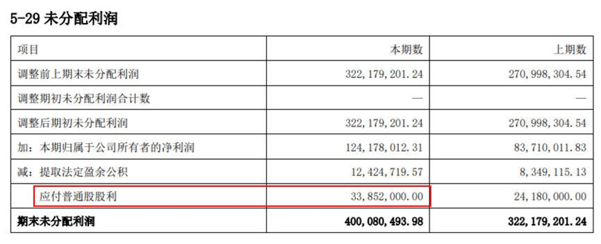
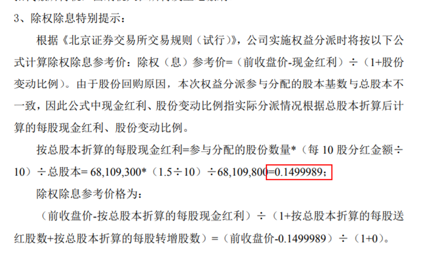

1 权益分派
1.1 财报数据准确性
1.1.1 报告期内已宣告分配方案的应付股利处理是否准确
如报告期内审议过权益分派，且后续完成实施的，无论实施期间在12月31日前后，均需关注应付股利是否计入，以及计入金额与权益分派实施公告的一致性。如未入账，应扣除该部分应付股利后再判断是否超额分派。

1.1.2 权益分派实施公告中的未分配利润、资本公积等数据与定期报告、权益分派预案中是否一致。
1.2 权益分派方案
1.2.1 1. 股本基数：是否存在库存股
是否考虑库存股：权益分派应当依据当前总股本为基数进行分派。如存在回购库存股等，导致分派基数与公司总股本不一致的情况，应在权益分派实施公告中说明。
库存股相关调整：若存在不参与分派的股份，导致分派基数与总股本不一致的情况，除权除息参数应以总股本为基数进行折算，保留至小数点后7位。

1.2.2 2. 分配规模：是否存在超分
（现金分红金额＋送红股金额）< 最近一次经审计的未分配利润（合并和母公司孰低）。
转增金额 < 最近一次经审计的母公司资本公积金额。
1.2.3 3. 实施时点：是否在有效期内
- 股权登记日应当在股东大会后2个月内，如超期，在公告中致歉，可以继续实施，但该行为违反了《权益分派指引》，属于权益分派违规。
- 如年度股东大会授权中期分红的，董事会按照股东大会授权制定权益分派方案后，无需股东大会再次审议，股权登记日应当在董事会后2个月内。
1.2.4 4. 分配方式
是否存在自派：对于权益分派方法为“部分自派”的，即按账户自派或按股份性质自派的，公司应核实自派股东是否存在质押、冻结等情况，自派是否符合相关约定或法院要求。同时应在权益分派实施公告披露申请中说明自派款项的派发安排，避免应分派未分派的定向分派情形。
是否为定向分派：原则上不可做定向分派（非面向全体股东分派、不按持股比例分派等），除非公司章程另有规定（仅限现金分红）。
1.3 权益分派实施注意事项
1.3.1 1. 存在正在进行的股份回购
调整回购价格、规模：与权益分派实施公告同步披露回购价格、股数调整公告
权益分派期间不得实施股份回购：因回购库存股会影响除权除息参数计算，为保证除权除息准确性，自向中国结算申请权益分派至权益分派实施完毕期间，不得实施股份回购操作。
要约价格调整：若存在进行中的要约收购或回购，要约价格应与基础证券权益分派同步调整，同时需进行业务操作。
1.3.2 2. 存在优先股
对于已发行优先股的上市公司需注意，公司在完全支付约定的优先股股东股息之前，不得向普通股股东分配利润。
1.3.3 3. 延期实施权益分派
若无法在已披露公告中的除权除息日进行派发的，公司需在R-1日前披露终止或延期分派公告，否则应申请自R日开市起停牌，并于披露相关公告后申请复牌。
1.3.4 4. 操作结果确认
为避免操作风险，确保除权除息准确性，上市公司需在在除权除息生效日（R+1日）8：45前及时登录业务支持平台对操作结果进行确认，如未按时操作，监管员会收到提示短信，请监管员提醒公司及时进行确认。公司应重点关注除权除息参考价的准确性。